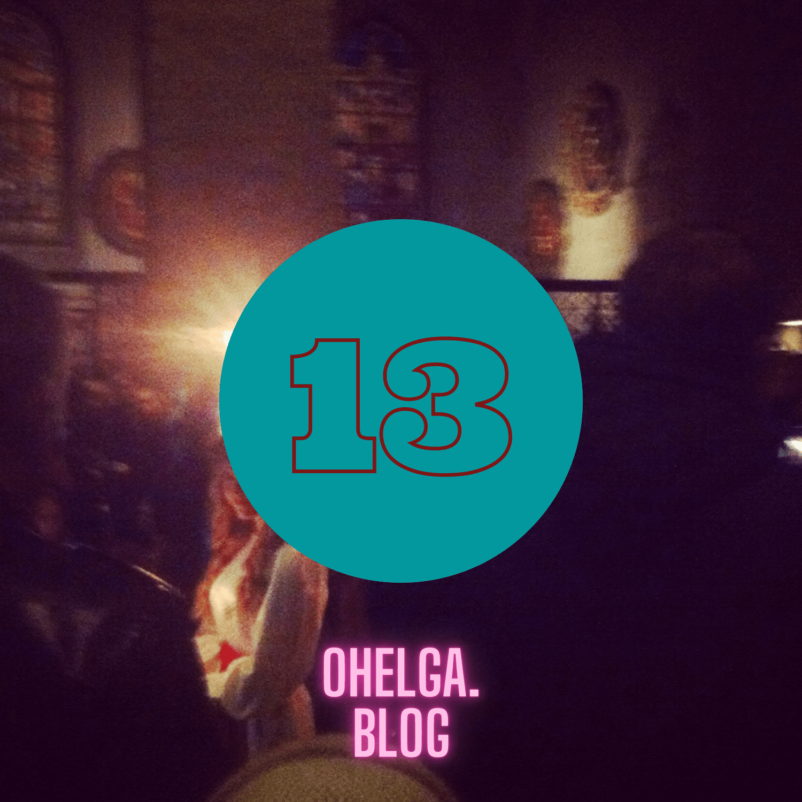

Är det eller är det inte en powerballad? Jaksossa tutustutaan politiikkaan, Monty Phytoniin ja Weltschmertz:iin. Ett spretigt avsnitt med pondus! Gulligt!
Linkit kappaleisiin:
Apple Music:
Arja Saijonmaa - O, helga natt
Spotify:
Arja Saijonmaa - O, helga natt

Kommentit / Kommentarer (1)
<p>Här var jag inte fullt lika impad som ni, för mig var det här 7,5 i betyg, men inte var det dåligt. Framför allt fattade jag när jag hörde detta vilken bra sångare Arja Saijonmaa faktiskt är, hon klarade ju tonen riktigt bra, och även låten som helhet bättre än de flesta popsångare som försöker sig på den. Speciell röst har hon också, mörk och dramatisk, det är liksom brösttoner, lite som en kvinnlig Waltteri Torikka, men till Arjas definitiva fördel. Vet ni förresten att det var nära att hon tävlade för Sverige i Eurovisionen 1987. Hon kom då tvåa i den svenska uttagningen, med ett poäng från vinnaren! </p>